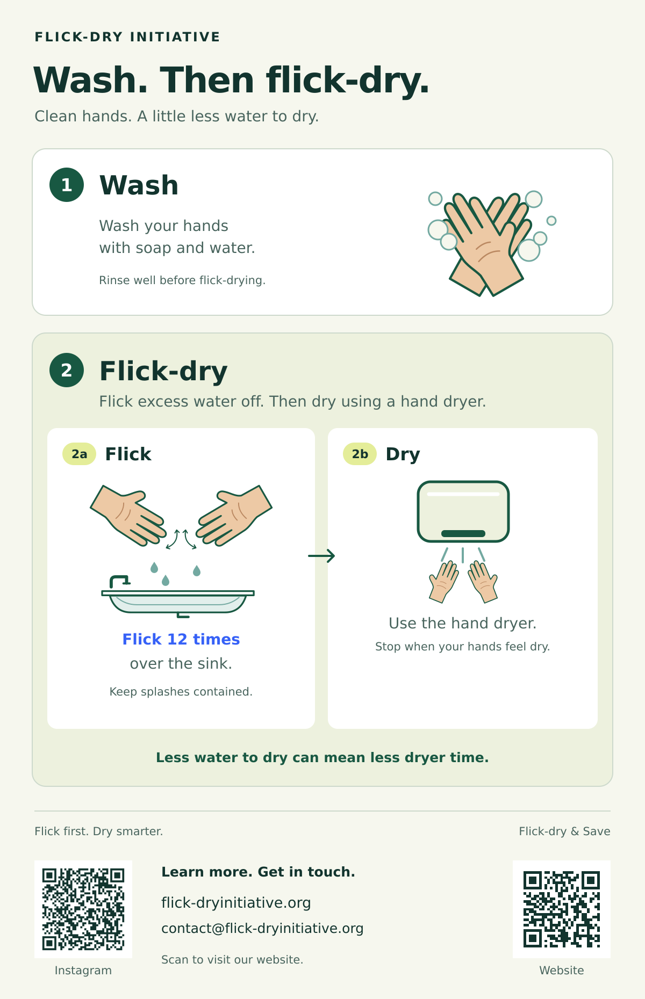

flick-dry
verb · flick-dries; flick-dried; flick-drying
To flick excess water off, then dry.
noun
A drying routine in which excess water is flicked off before drying.
Flick-dry. Use less dryer time. Experience the savings.
We’re starting with hand-drying: can flicking excess water off before using an electric hand dryer reduce its running time and energy use? Our first studies measure how much flicking reduces dryer running time—and the energy saved by running the dryer for less time.
Less dryer running time means less energy use.
Wash and rinse, then compare direct-drying with flicking followed by drying. The accelerated example timers show 15 seconds versus 10 seconds: 5 seconds, or 33.3%, less dryer time. Example only, not measured or guaranteed.
verb · flick-dries; flick-dried; flick-drying
To flick excess water off, then dry.
noun
A drying routine in which excess water is flicked off before drying.
The Initiative’s research and public education begin with hand-drying; our current findings and guidance apply to that setting, not to other drying uses.
YouTube Short · 37 seconds
Watch a quick demonstration of flicking excess water off before using the hand dryer.
Full video · 1 minute
Follow the steps from washing with soap and water to flick-drying your hands.
Printable sticker / poster
Download a visual guide to display near the sink or hand dryer.

Investigate flick-dry practices through research, develop evidence-based guidance, and share clear, accessible public education to help people make informed choices about drying and resource use—starting with hand-drying.
A world where flick-dry is an everyday habit that saves energy.
Our aspiration guides the project; evidence determines where and how the practice should be recommended.
Our initial hand-drying studies measure how much flicking excess water off before using an electric hand dryer reduces dryer running time and saves energy. Participants stop when their hands feel dry, just as they would in everyday use. We also track total task time, check timing accuracy, and follow safe-use practices.
Use this approach to compare flick-dry and direct-dry for yourself.
The app measures dryer running time and lets users review each recorded run. Shorter running time means less energy used. Private working records and editable tools are not exposed through this website.
Reports describe the recorded runtimes, the power values used to calculate energy savings, and the conditions covered by each comparison.
Abstract
Flicking excess water from washed hands before using a towel or electric dryer is a plausible resource-saving intervention, but its incremental effect must be distinguished from the effects of subsequent drying. Crucially, flicking is already embedded in relevant experimental protocols: Patrick et al. used two flicks before drying-efficiency measurements and the wet bacterial-transfer baseline, while Suen et al. required at least five flicks before comparing drying methods.[1][7] Research shows that environmental comparisons depend on equipment, resource use, and modeling assumptions.[1][3][11] However, the sources examined do not establish a causal conversion from flick count to water removal, towel savings, or electricity savings at equivalent final dryness. This review synthesizes protocol evidence, behavioral research, and supports dose-controlled evaluation of pre-flicking.
Numbered references are listed in the full review.
Analysis snapshot · September 6, 2026
14 exports, 102 unique runs, and 15 provisional comparison sets. After six invalid measurements are excluded, 96 reviewed runs contribute to within-set comparisons.
Every comparison set recorded a lower median dryer runtime with flick-dry. Larger studies will help show how savings vary across users and dryers.
Read the Stage 2 report →How we developed the timing tool and compared the two drying routines
Collect dryer-running data first, then use those recordings to inform development of the Flick First Dryer Verifier app. These recordings were used to develop and check the dryer-timing tool.
Use the Flick First Dryer Verifier to record dryer runs for trials of flick-dry and direct-dry. Review the events and classify each as flick-dry, direct-dry, or invalid measurement.
Check archive and timing consistency, remove repeated exports, exclude invalid measurements, and compare runtimes within provisional sets. Publish the results with sample sizes, assumptions, and limitations.
Our education-first app focuses on flick-dry for hand-drying, uses the microphone to estimate hand-dryer running time, and asks whether each use included flick-dry. Select the same physical dryer to compare uses involving flick-dry or direct-dry, with per-use and cumulative estimated time and energy changes.
Measurements stay local to your phone. No raw audio is saved, and no account or upload server is required. An optional ZIP export lets you choose whether to email your measurements. Monitoring has a manual Stop control and an automatic timeout.
Visiting science museums in different cities has always been part of my family vacation. After visiting so many science museums, the exhibits started to blend. However, one I still recall vividly was an exhibit about flicking excess water off your hands to use less paper to dry them. What struck me was the idea that such a small, seemingly insignificant action could have a meaningful impact. The specific museum and city have long since slipped my mind, but the idea the exhibit presented stayed with me. It made me wonder how I could apply this concept to a society increasingly dependent on electricity; in particular, I wondered how flicking excess water could reduce the energy consumption of electric hand dryers.
That question was the beginning of the Flick-dry Initiative. Starting with a review of current research, I developed app prototypes and collected and analyzed data. The early app prototypes did not work. Rather than keep adjusting them, I switched to a data-driven approach: I collected recordings of dryers running, labeled the data, and used those labels to develop the Flick First Dryer Verifier app. This approach produced a working tool for recording dryer running times and supporting comparisons between flick-dry and direct-dry trials.
My goal is to bring this work into public education and build partnerships with schools, researchers, and communities. Through this website and the Flick-dry app, I want to help people understand and try a simple habit: flick excess water off first, then dry their hands. By working with partners to share the idea and test it in everyday settings, I hope to turn the vision into practice—small changes in daily habits that make a big impact on resource savings.
Thank you to the businesses displaying Flick-dry stickers in their washrooms and helping bring this everyday habit to more people.
Meet our participating businessesQuestions, feedback, or interested in supporting the Flick-dry Initiative? We’d love to hear from you.
Email us: contact@flick-dryinitiative.org
See demos, project updates, and ways to take part.
@flickdryinitiativeTap or scan to visit Instagram.
{kind=link}